Three fighters cross a mountain lake at dawn, three metres above the water. Build the lake, fly the formation and make them touch the world with spray.
9 illustrated stagesThree lessonsGlossy water · parenting · Track To · particlesStarter: the Canyon Dogfight file
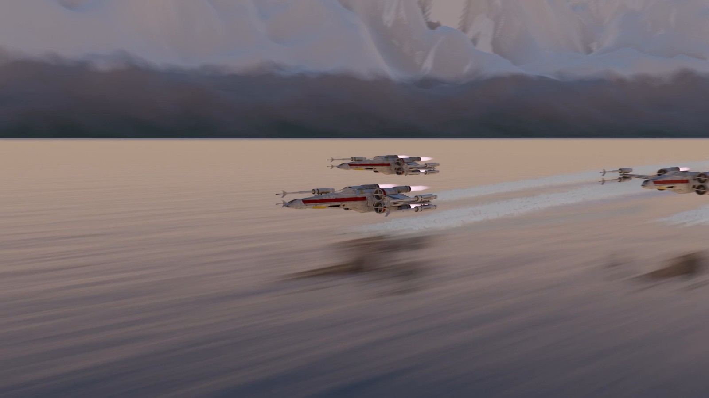
The demo shot, made in Blender with this tutorial’s steps. Rescue Run, shot 1.
Low. Fast. Wet.
Do Canyon Dogfight first: this shot reuses its starter file and its ships.
My supports
Turn on any help you want. Your teacher may have set some for you. They change how the guide helps, not what is assessed.
Shot brief
The squadron arrives.
Rescue Run opens with three fighters crossing a lake at dawn. Deliver a six-second shot of the formation skimming the water, and a change of the director’s choosing.
You will hand in
A screenshot of your water material
The finished shot as an MP4
The director’s change, with a three-sentence explanation
Credits
Files
Start from canyon_start.blend in the class folder (the same starter as Canyon Dogfight). The ship model’s credit is in that file’s notes.
An environment artist builds the place, an animator flies the ships, and an effects artist adds everything the ships do to the world: spray, wakes, dust. On real productions those are three departments. Effects are often the last thing added and the first thing an audience believes.
Knowledge first
Why this works.
Water is a mirror
Low roughness makes it reflect. A moving bump breaks the reflection into ripples. Its colour is the sky’s.
Speed needs something close
The same speed looks slow from high up and frantic near the surface, because nearby things cross the frame faster.
Contact sells it
Spray and a wake show the ships affecting the world. Without them, they are pasted in front of it.
Design principles in the shot
Movement: everything streams one way. Repetition: three ships, three wakes. Contrast: hard machines over soft water.
What this assesses
Skills you will show.
Skill (sprint skill ID)
Where you show it
Keyframe animation and staging · BL-KEY-01 · AN-STG-01
Steps 4 to 6
Effects · BL-FX-01
Step 7
Lighting and render · BL-LGT-01 · BL-RND-01
Steps 2, 3 and 8
Critique and refinement · GD-CRIT-01
Step 9
Primary achievement evidence: the director’s change (step 9). Guided steps and supports are recorded separately from achievement. Shot-library option in sprint mm12-26-s08.
Session A · Lesson 1 · VFX shot library · Rescue Run shot 1
Build the lake.
Three fighters skim a mountain lake at dawn. Today you build the place: water, mountains and sky.
TODAYStudy and plan (10 min), clear the starter and add water (25 min), mountains and dawn light (30 min).
01
Watch the shot and plan it
Start here: read or listen to the theory deck (about 10 minutes, with checkpoint questions), then come back.
IN SHORTWatch; note what shows height and speed; find the sun; list what moves; plan.
READ ALOUD
DOCUMENT: The finished demo SELECT: Nothing yet TOOLS / ROUTE: Play · pause · look
Play the demo. What tells you the ships are low? What tells you they are fast?
Pause on a frame. Look at the water: what does it reflect? Where is it bright?
Find the sun. Which side of the ships is lit? Which way do the reflections stretch?
Count the things that move: the ships, the camera, the ripples, the spray.
Write a three-line plan: the place, the flight, the contact.
1 · The lake
One huge plane, a glossy material and a moving ripple. A ring of mountains and a dawn sky.
2 · The flight
One leader keyed in a straight line, two wingmen parented to it, and a low camera that keeps up.
3 · Contact
Spray and a foam wake: proof that the ships are touching the world.
The demo, built in Blender from the Canyon Dogfight starter file.
STEP CHECKLIST
GLOSSARY
Skim: To fly just above a surface
Wake: The disturbed trail a moving thing leaves on water
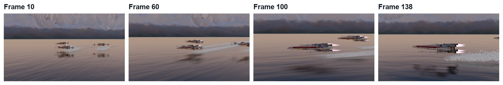
Four frames from the demo. The camera starts ahead of the ships and they catch it up.
WHYSpeed is only visible against something close. Low over water, with a wake behind, is the fastest a shot can feel.
CHECKNotes on height, speed, sun direction and what moves, and a three-line plan.
FIXCannot find the sun? Look at which side of a ship is bright.
WORKED EXAMPLE · DIFFERENT OBJECTThe demo is 144 frames at 24 frames per second: 6 seconds.
STRETCH (AFTER THE CHECK PASSES)Find a real photograph of a boat wake and note its shape.
Method basis: B1. Values and sequence are authored for this project.
02
Clear the canyon and make water
IN SHORTDelete the canyon; huge plane; dark colour, Roughness 0.06; stretched Noise → Bump → Normal; key W.
READ ALOUD
DOCUMENT: canyon_start.blend → save as LakeSkim_YourName.blend SELECT: One huge plane with a glossy, rippling material TOOLS / ROUTE: X to delete · Add › Mesh › Plane · Shading: Noise Texture · Bump
Open the Canyon Dogfight starter and save it under a new name. Delete the canyon, the rocks, the TIE fighter and the path. Keep the two X-wings, the camera and the sun.
Add › Mesh › Plane. Scale it until it reaches the horizon in every direction. Name it Lake.
Shading workspace: new material. Base Color very dark blue-green, Roughness about 0.06. It should look like a dark mirror.
Add a Noise Texture into a Bump node, and the Bump into Normal. Use a Mapping node to stretch the noise: small Scale on Y, larger on X, so the ripples are long.
Set the Noise to 4D. Key its W value: 0 on frame 1, about 1.6 on the last frame. The ripples now drift.
Click by click (real Blender screenshots)
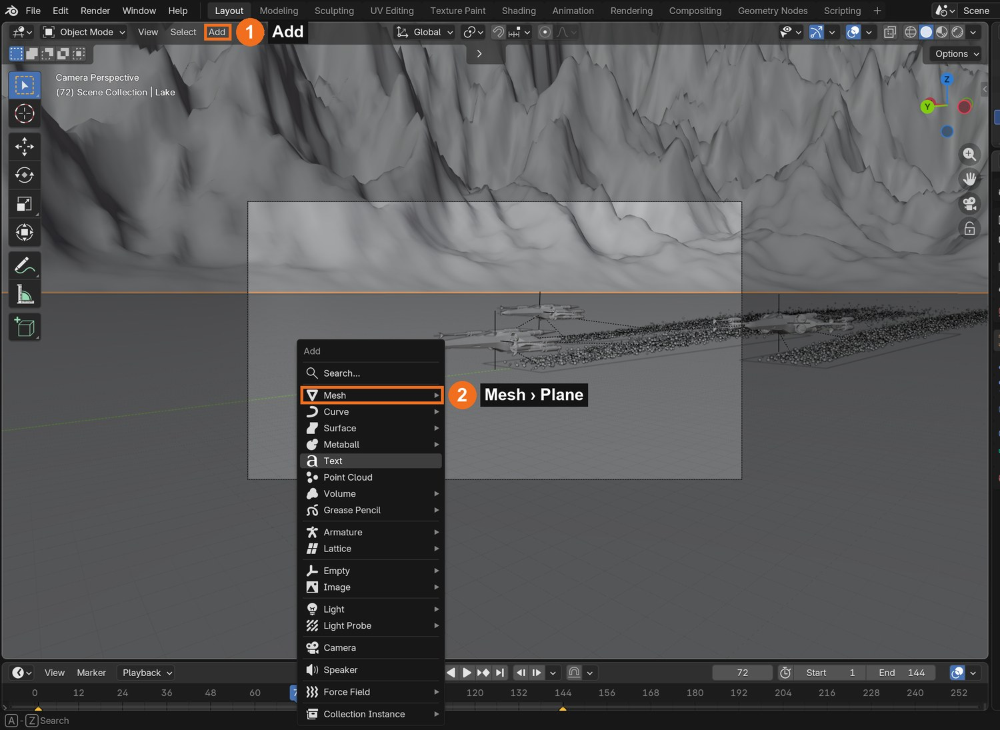
Add (1) › Mesh (2) › Plane.
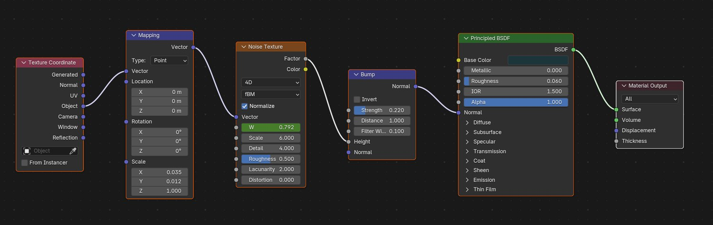
The demo’s water material: Texture Coordinate → Mapping → Noise Texture (4D) → Bump → Principled BSDF.
Where
Setting
Demo value
Water
Roughness
0.06
Noise Texture
Dimensions / Scale
4D / 6
Noise W
Frame 1 → 144
0 → 1.6
Bump
Strength
0.22
STEP CHECKLIST
GLOSSARY
Roughness: How blurred a surface’s reflections are
Bump: Fake relief made by bending the surface’s shading
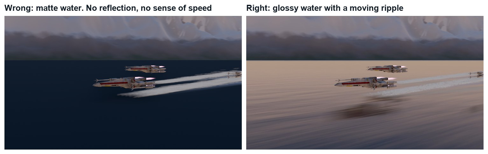
Wrong and right, same frame. Left: rough, flat water. Right: Roughness 0.06 and a bump from a moving noise.
WHYWater is mostly a mirror. Its colour comes from what it reflects; its character comes from how the ripples bend that reflection.
CHECKA plane that reaches the horizon and reflects the sky, with ripples that move when you play.
FIXWater looks like blue plastic? Roughness is too high. No ripples? The Bump is not plugged into Normal.
WORKED EXAMPLE · DIFFERENT OBJECTDemo values: Base Color (0.012, 0.035, 0.045), Roughness 0.06, Noise scale 6, Mapping scale 0.035 × 0.012, Bump strength 0.22.
STRETCH (AFTER THE CHECK PASSES)Add a second, much finer noise for sparkle near the camera.
Method basis: B1 · B2. Values and sequence are authored for this project.
03
Ring the lake with mountains and light it for dawn
IN SHORTGrid + Displace for a far shore; height-based colour; low warm sun behind the camera; gradient World.
READ ALOUD
DOCUMENT: LakeSkim_YourName.blend SELECT: A far shore, a low sun and a gradient sky TOOLS / ROUTE: Grid + Displace · Sun · World nodes
Add a large Grid (at least 300 × 300) around the lake, lower it just below the water in the middle, and use a Displace modifier with a strong texture so only its edges rise into mountains.
Give it a material that changes with height: dark at the shore, grey rock, white near the top (Geometry › Position Z into a Color Ramp).
Rotate the Sun so it is low and comes from behind where the camera will be. Give it a warm colour.
World: replace the sky with a gradient from peach at the horizon to blue overhead (Texture Coordinate › Generated Z into a Color Ramp).
Look across the lake in Rendered view. The far shore should be lit, and the water should pick up the sky’s colour.
What went wrong when we built the demo: our first version had the sun ahead of the ships. The far shore was a black band and the sky a flat grey. Moving the sun behind the camera lit the shore and the ships, and a simple two-colour sky gave the water its colour.
STEP CHECKLIST
GLOSSARY
Displace: A modifier that pushes a surface using a texture
Gradient: A smooth change from one colour to another
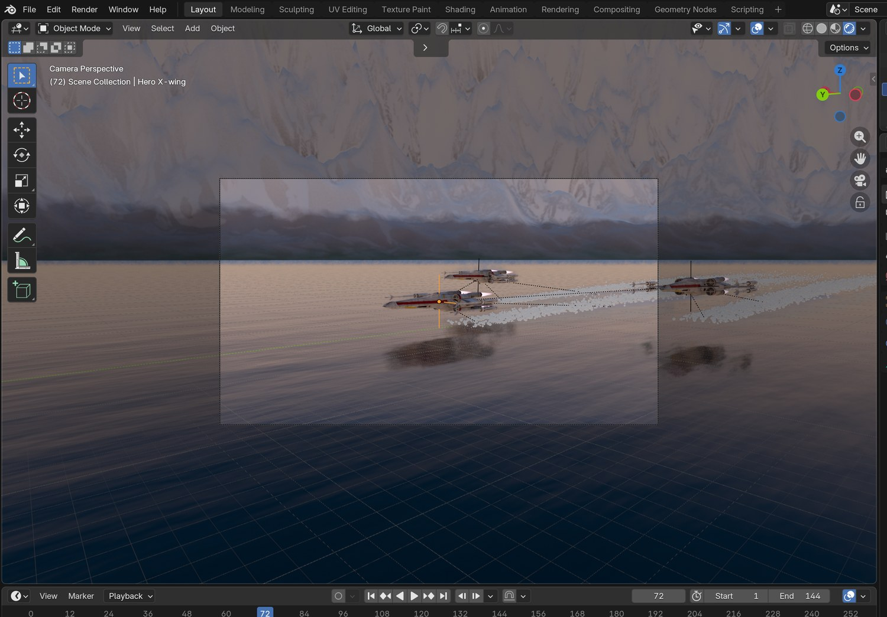
Real screenshot: Rendered view through the camera. The water takes its colour from the dawn sky.
WHYThe sky lights the water twice: directly, and as the thing the water reflects. Choosing the sky is choosing the colour of the lake.
CHECKA lit far shore, a warm low sun, and water that reflects a dawn gradient.
FIXMountains black? The sun is behind them: bring it round behind the camera. Water grey? The World is still the old sky.
WORKED EXAMPLE · DIFFERENT OBJECTStated shortcut: the demo’s mountains were shaped by a script (the same idea). Demo sun: strength 5, colour (1.0, 0.78, 0.55).
STRETCH (AFTER THE CHECK PASSES)Fade distant rock towards the sky colour for haze.
Method basis: B1. Values and sequence are authored for this project.
Session B · Lesson 2 · VFX shot library
Fly in formation.
One ship is animated. The other two follow it. The camera races alongside.
TODAYLeader (15 min), wingmen (25 min), camera (25 min).
04
Key the leader in a straight line
Recall first (from last lesson, no peeking):
What makes water look like water: its colour or its roughness?
Why key the W value of the noise?
Where is the sun in the demo, and why?
Say or write your answers, then check them against your file.
IN SHORTClear the old constraint; 3 m high; key Location on frames 1 and 144, 900 m apart; Linear.
READ ALOUD
DOCUMENT: LakeSkim_YourName.blend SELECT: Two location keyframes on the Hero X-wing TOOLS / ROUTE: I › Location · Graph Editor › Linear
Select the Hero X-wing. Clear its old path constraint (Object Constraint properties › X).
Turn it to face up the lake and put it 3 m above the water. Low is the whole point.
Frame 1: press I › Location. Last frame: move it about 900 m forward and press I again.
Open the Graph Editor, select the curve, and set Key › Interpolation Mode › Linear. A fighter at cruise does not ease in and out.
Play it. It should cross the lake at a steady speed.
STEP CHECKLIST
GLOSSARY
Interpolation: How Blender moves between two keyframes
Linear: A constant speed between keys
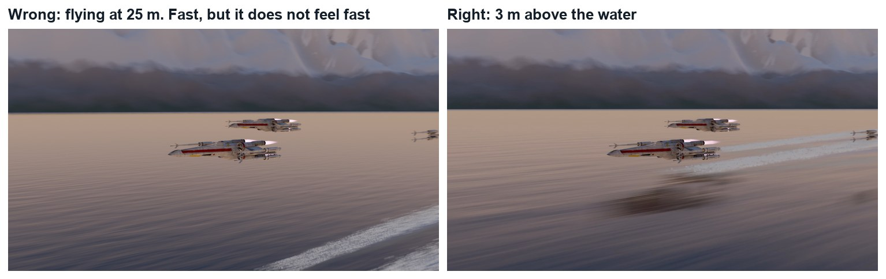
Wrong and right. Height changes everything: the same speed looks slow from high up.
WHYTwo keys and a straight line are enough when the interest comes from the place and the camera. Linear keeps the speed constant.
CHECKA leader that crosses the lake at a steady speed, 3 m above the water.
FIXIt speeds up and slows down? The curve is still Bezier: set it to Linear.
WORKED EXAMPLE · DIFFERENT OBJECTDemo: 150 m per second for 6 seconds, at 3 m.
STRETCH (AFTER THE CHECK PASSES)Add a very slight climb over the last second, ready for the next shot.
Method basis: B3. Values and sequence are authored for this project.
05
Parent two wingmen to the leader
IN SHORTTwo wingmen; V behind the leader; Ctrl-P to the leader; small keyed drifts and rolls.
READ ALOUD
DOCUMENT: LakeSkim_YourName.blend SELECT: Two more ships that hold a V and drift a little TOOLS / ROUTE: Shift-D · Ctrl-P · I
Duplicate the second X-wing so you have two wingmen. Name them Wingman left and Wingman right.
Place them behind the leader, one on each side, a little higher: a V.
Select both wingmen, then the leader last, and press Ctrl-P › Object. They now follow it.
Play it. Three ships locked rigidly together look like one model. So every 16 frames or so, nudge each wingman a metre or less and roll it a few degrees, and key Location and Rotation.
Play again. They should hold the V, but breathe.
STEP CHECKLIST
GLOSSARY
Parent: An object that others follow
Formation: A fixed arrangement of aircraft flying together
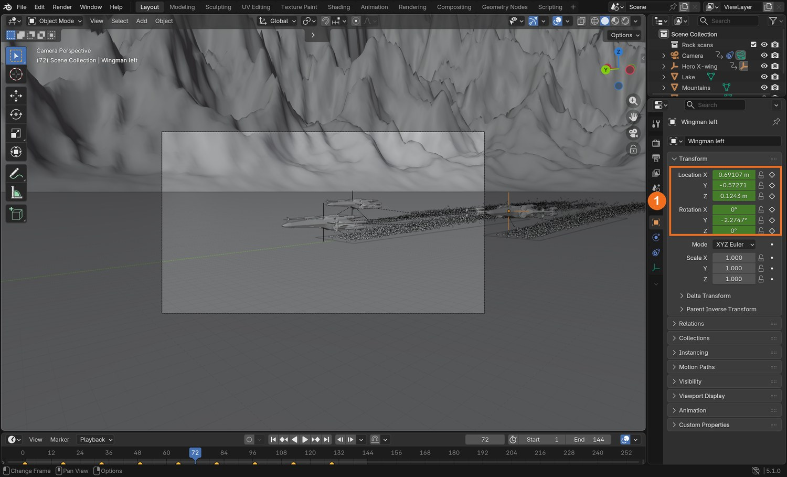
Real screenshot: Wingman left selected. Its Location and Rotation (1) are keyed: small drifts inside its slot in the V.
WHYParenting gives you the formation for free. Small differences between the ships are what make them look flown by different pilots.
CHECKTwo wingmen that follow the leader and drift slightly, each differently.
FIXWingmen jump when parented? Use Ctrl-P › Object (Keep Transform).
WORKED EXAMPLE · DIFFERENT OBJECTDemo slots: 17 m to each side, 24 m behind, 1.5 m higher. Drift up to 1.5 m, roll up to 7°.
STRETCH (AFTER THE CHECK PASSES)Have one wingman slide out of position and correct.
Method basis: B3. Values and sequence are authored for this project.
06
Put the camera low and make it keep up
IN SHORTCamera low and to one side; Track To the leader; key Location, 90 % of the ships’ distance; Linear; 40 mm.
READ ALOUD
DOCUMENT: LakeSkim_YourName.blend SELECT: A camera beside the formation that looks at the leader TOOLS / ROUTE: I › Location · Object Constraints › Track To
Move the camera to one side of the leader’s path, a little ahead of the ships, 6 to 9 m above the water.
Add Object Constraint › Track To. Target: Hero X-wing. Track Axis −Z, Up Y. The camera now always looks at the leader.
Key the camera’s Location on frame 1. On the last frame move it forward almost as far as the ships travel (about 90 %), and key it. Set it to Linear.
Because the camera is slightly slower, the ships start behind it and catch it up, growing in the frame. Check that this is what you see.
Set the lens to about 40 mm. Play the shot from the camera.
Click by click (real Blender screenshots)
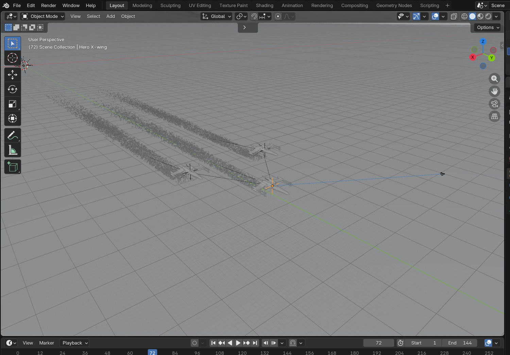
The demo from above: three ships in a V, their foam strips behind them, and the camera to the right of the picture.
STEP CHECKLIST
GLOSSARY
Track To: A constraint that keeps an object aimed at a target
Tracking shot: A shot where the camera travels with the subject
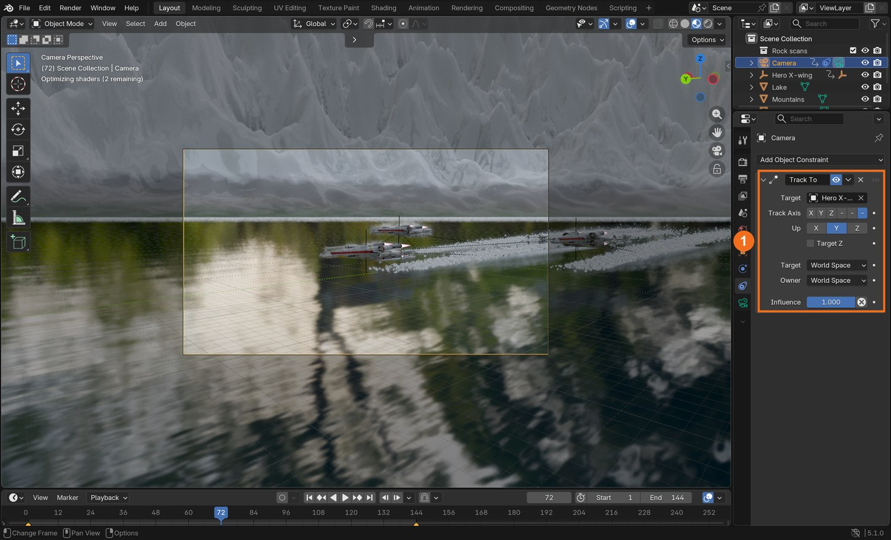
Real screenshot: the Track To constraint (1) on the camera, with the Hero X-wing as its target.
WHYA camera that travels with its subject keeps the subject readable while the world streaks past. Travelling slightly slower lets the subject arrive.
CHECKA shot where the ships grow in frame while the water rushes underneath.
FIXCamera looks the wrong way? Track Axis must be −Z and Up must be Y.
WORKED EXAMPLE · DIFFERENT OBJECTDemo camera: 48 m to the side, from 9 m down to 6.5 m high, 40 mm lens.
STRETCH (AFTER THE CHECK PASSES)Try the camera on the other side, looking into the sun.
Method basis: B4. Values and sequence are authored for this project.
Session C · Lesson 3 · VFX shot library
Touch the water. Deliver.
Spray and a wake are what prove the ships are in the world. Then a director asks for a change.
TODAYWake and spray (30 min), render settings (10 min), director’s change and render (25 min).
07
Add a foam wake and spray
Recall first (from last lesson, no peeking):
Why is the leader’s movement Linear?
What does parenting the wingmen save you?
Why does the camera travel slightly slower than the ships?
Say or write your answers, then check them against your file.
IN SHORTFoam strip with fading Alpha; emitter plane; 45,000 particles, lifetime 22; Normal 6; Object Velocity 0.45; render as a tiny sphere.
READ ALOUD
DOCUMENT: LakeSkim_YourName.blend SELECT: A fading strip of foam and a particle system under each ship TOOLS / ROUTE: Plane · Alpha · Particle properties › Emitter
Under each ship add a long thin plane lying just above the water, trailing behind. Parent it to the ship’s parent so it follows.
Give it a white material whose Alpha fades along its length and breaks up with a Noise Texture. Set the material’s Render Method to Blended.
Add a small plane under the tail of each ship as an emitter. In Particle properties click + to add a system.
Number 45,000; Lifetime about 22 frames; Velocity › Normal 6 with Randomize 5; Object Velocity about 0.45, so the spray is thrown forward with the ship.
Render › Render As: Object, and pick a tiny sphere as the Instance Object. Hide the emitter itself from the render.
Click by click (real Blender screenshots)
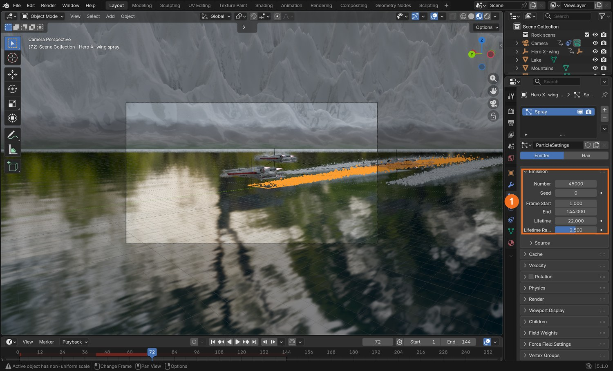
Real screenshot: the spray emitter’s particle settings. Emission (1): Number, Frame Start and End, Lifetime.
Where
Setting
Demo value
Emission
Number
45,000
Emission
Lifetime / Randomness
22 / 0.5
Velocity
Normal / Randomize
6 / 5
Velocity
Object Velocity
0.45
What went wrong when we built the demo: the first spray was a thin line of dots far behind the ships. The emitter was too small and Object Velocity was low, so the particles were left behind at once. A longer emitter and more forward velocity kept a cloud at the tail.
STEP CHECKLIST
GLOSSARY
Particle system: Many small objects created and moved by rules
Emitter: The object particles are born from
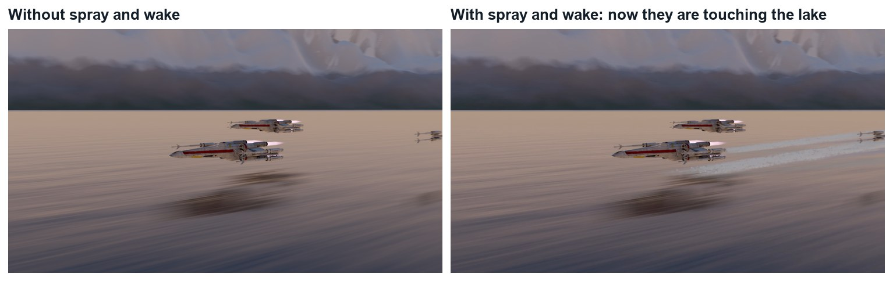
Same frame without and with the wake and spray.
WHYContact effects are small, but they are what the eye checks. Without them a ship is in front of a lake. With them it is in it.
CHECKA fading foam trail and a burst of spray behind each ship, moving with it.
FIXSpray left hanging in the air behind? Object Velocity is 0. Spray is big balls? Lower the particle Scale.
WORKED EXAMPLE · DIFFERENT OBJECTDemo spray drop: a sphere of scale 0.22 with a little emission so it catches the light.
STRETCH (AFTER THE CHECK PASSES)Add a faint mist: a second system with fewer, larger, more transparent particles.
Method basis: B5. Values and sequence are authored for this project.
08
Set the render up
IN SHORTEEVEE; Raytracing; Motion Blur; 1080p, 24 fps; test one frame; render H.264.
READ ALOUD
DOCUMENT: LakeSkim_YourName.blend · Render and Output properties SELECT: EEVEE with ray tracing and motion blur TOOLS / ROUTE: Raytracing · Motion Blur · FFmpeg
Render properties: engine EEVEE. Tick Raytracing, so the water reflects the ships.
Tick Motion Blur. At this speed the water should streak.
Figures marked Illustration are drawn, not screenshots. Step values are starting points authored for this project. Draft for teacher review; not yet classroom-piloted.